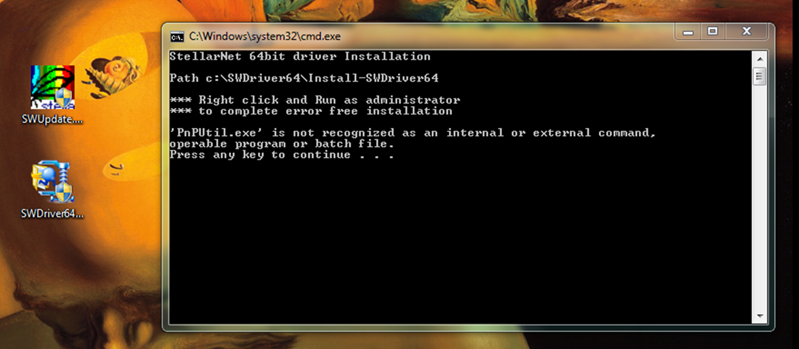
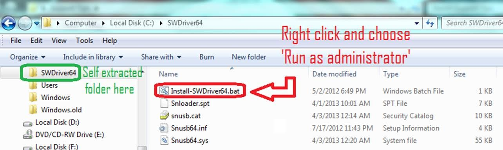
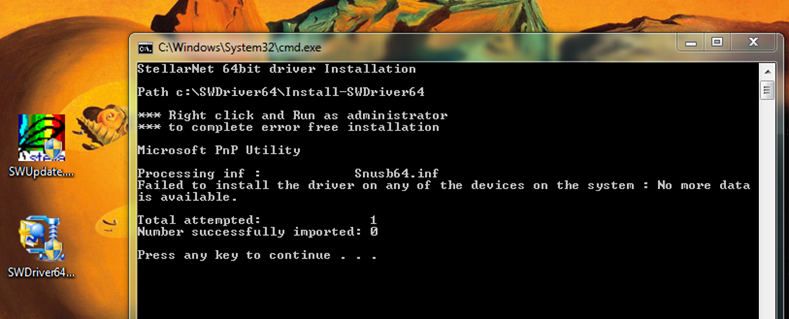
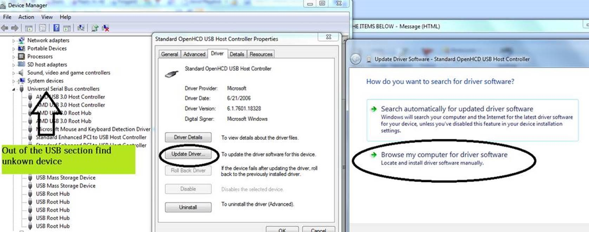
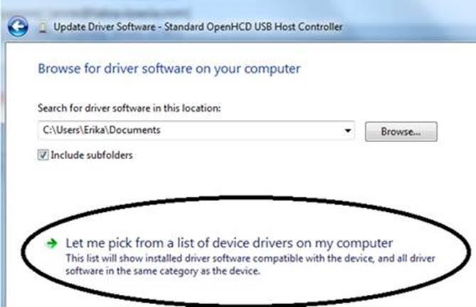
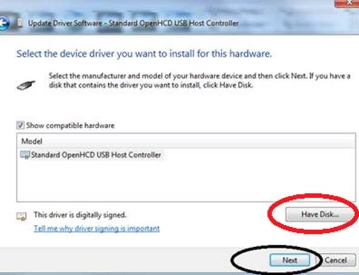
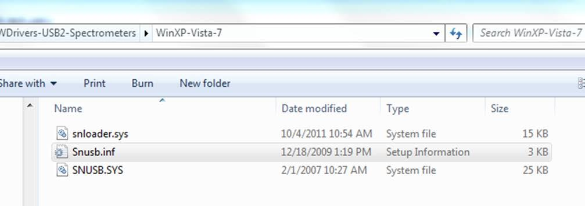

I hear that you
have old EPP2000 spectrometers.
These are not supported by our latest drivers, but our
old drivers should work just fine. Below are two links
to the drivers and software which you need to download,
followed by an explanation of how to manually install
them.
If you have the new drivers installed, you’re going to
need to delete them from the C:\Windows\System32\drivers
folder. Delete anything with snusb in the beginning of
the name. Then you can run through the following
installation.
Below is an
installation tutorial for Windows 7 64bit followed
by 32bit installation instructions; the methods are
the same in Win10 but may not look exactly the same
as the
pictures.
Try these
steps:
- Visit our website
www.stellarnet.us
- Click on the download
section of our website
- Fill out the software
registration form
- Check your email for
links to the software files
- The files you
immediately will need are
SWDriver64.exe
and
SWUpdate.exe.
Links to these will be in the email and will
save to the downloads folder by default.
- Right click on the
SWUpdate.exe file in your downloads
folder
- Choose “Run as
administrator”
- A rainbow colored
SpectraWiz icon should come up on your desktop
along with a Comand Prompt telling you to press
any key to continue
- Now we can install the
drivers.
- Right click on the
SWDriver64.exe icon in your downloads folder and
choose to “Run as
administrator”
- A command prompt will
pop up and look like there is an error message
but it is normal if it looks like the image
below

- Now you need to open
windows explorer
- Right click on the
start menu and choose “open windows
explorer”
- In the left hand panel,
scroll down to the C: drive and left click on it
to display its contents in the right hand
panel
- There should be a
folder called SWDriver64
- Open this
folder
- Right click on
Install-SWDriver64.bat
- Choose “Run as
administrator”

- If the spectrometer is
not plugged in when you run this file, it will
say this:

- If you plug in the USB
for the spectrometer into a properly functioning
USB port, your instrument’s green light should
turn on.
- If your green light
doesn’t turn on after following the above steps
exactly, try following the steps again. If the
2nd attempt doesn’t
work try installing on a different USB
port.
- Now Run SpectraWiz as
administrator, Right click on the SpectraWiz
icon and choose “Run as
administrator”
FOR
32BIT:
-Make sure to
download the
SWDrivers.zip file from our website and
save it to
your desktop. To get this file and the SWUpdate file, register on the
software download
page
and we will send you a link to the files.
-Unzip
it/extract it to your desktop by right clicking and
choosing extract or unzip and specifying that you
want it to unzip to a folder on the desktop.
-The
procedure will vary for each version of windows but
the driver must be installed manually from the
Windows Device Manager. To find the device manager
you can usually find
under the icon view of the Control Panel.
-With the
spectrometer plugged in, find the “Unknown” device
under the USB section, right click and choose
“Update Driver.”
Do not pick the option which searches
automatically.

Do pick the
option which appears to manually search in a
specific location or a deeper option may appear
which says “Have Disk.” For all modern
spectrometers, the file
is C:\Users\(YOUR
NAME)\Desktop\SWDrivers13\SWDrivers-USB2-Spectrometers\WinXP-Vista-7\snusb.inf



I hope this
helps!
Also, check
out
Spectroscopy
Pro-Tools – you might like
it.
If you have
any questions, reach out to me or email
support@stellarnet.us
Cheers,
Applications
Scientist
StellarNet
Inc.
14390
Carlson Circle
Tampa, FL 33626
Office
+1(813)855-8687
Mobile
+1(813)815-0551
Fax
+1(813)855-0394
www.StellarNet.us
Check out our
NEW Raman
Systems!